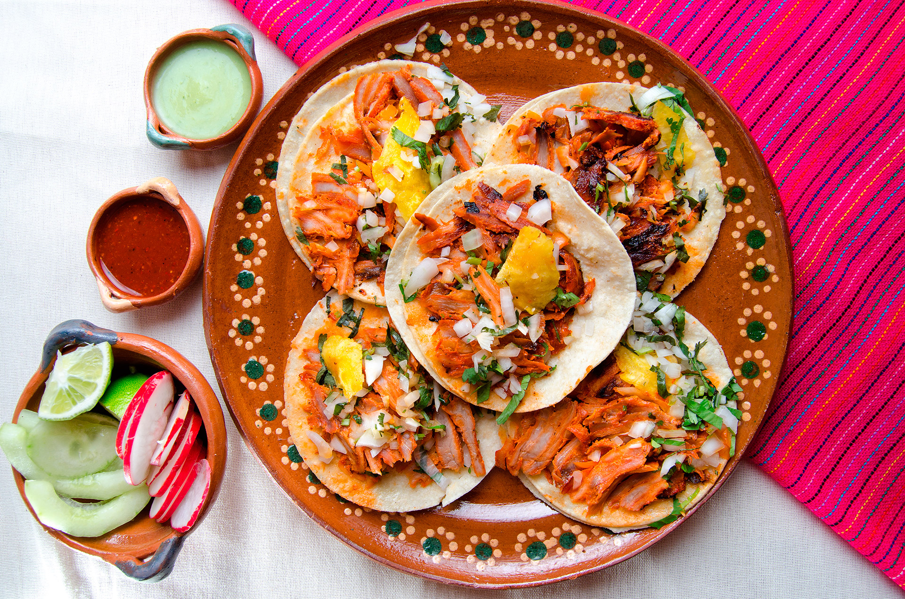

Tacos al pastor

This delicious dish is typical in Mexico. You can find every ingredient in your local market.
Ingredients
- Al pastor meat
- Tortillas
- Onion and Parsil
- Pinaple
Steps
- Cook the meat
- Add chopped pieces of pinaple and let cook for five minutes
- In the mean time, cut and mix the parsil and onion in small pieces
- Heat the tortilla
- Add the meat in the tortilla and on top the sliced vegetables
Return to main page